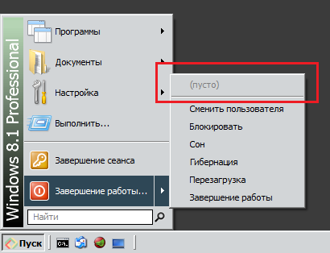
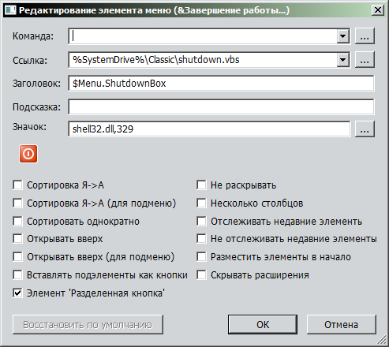

Attached the settings, but I can assure you the item appears if to remove the default command from the shutdown box.
| Attachments: |
|
Downloaded 48 times |
| Classic Shell http://www.classicshell.net/forum/ |
|
| Empty element in shutdown box http://www.classicshell.net/forum/viewtopic.php?f=12&t=7889 |
Page 1 of 1 |
| Author: | Anixx [ Fri Sep 08, 2017 8:49 am ] |
| Post subject: | Empty element in shutdown box |
 |
|
| Author: | Anixx [ Fri Sep 08, 2017 8:58 am ] |
| Post subject: | Re: Empty element in shutdown box |
This empty element appears if to change the default action for shutdown button. Like this:  |
|
| Author: | Ivo [ Fri Sep 08, 2017 9:12 am ] |
| Post subject: | Re: Empty element in shutdown box |
Post your exact settings in XML form. |
|
| Author: | Anixx [ Fri Sep 08, 2017 9:39 am ] | ||
| Post subject: | Re: Empty element in shutdown box | ||
Attached the settings, but I can assure you the item appears if to remove the default command from the shutdown box.
|
|||
| Author: | Anixx [ Fri Sep 08, 2017 10:34 am ] |
| Post subject: | Re: Empty element in shutdown box |
More precisely, when adding a new command to the "shortcut" fild. |
|
| Author: | Ivo [ Fri Sep 08, 2017 8:11 pm ] |
| Post subject: | Re: Empty element in shutdown box |
Doesn't happen for me with your settings. The (empty) element should appear only when you drag something into the menu. What version of Windows do you have? Which skin are you using? |
|
| Author: | Anixx [ Sat Sep 09, 2017 3:24 am ] |
| Post subject: | Re: Empty element in shutdown box |
I reset all settings, repeated the actions (removed default command from power off button, added link to a script), and got the empty element again. It does not depend on skin and appears even after settings reset. 
|
|
| Author: | Anixx [ Sat Sep 09, 2017 3:29 am ] |
| Post subject: | Re: Empty element in shutdown box |
An interesting fact is that the empty item appears only if the link links to a file using full path, and the file exists. If it uses a command such as "shutdown -p" the empty item does not appear. If the file does not exist, there is no empty item either. If there are command prompt parameters, there is no empty item, only if there are none. For instance, link %SystemRoot%\System32\shutdown.exe produces empty item, whille %SystemRoot%\System32\shutdown.exe -p does not. |
|
| Author: | Anixx [ Sat Sep 09, 2017 3:34 am ] | ||
| Post subject: | Re: Empty element in shutdown box | ||
These settings should produce the empty item on your system (it links to the shutdown uutility that exists on any Windows system).
|
|||
| Author: | Anixx [ Sat Sep 09, 2017 3:37 am ] |
| Post subject: | Re: Empty element in shutdown box |
Well, a workaround: I have changed %SystemDrive%\Classic\shutdown.vbs to %SystemDrive%\Classic\shutdown.vbs -a (a meaningless parameter which is not processed by the script), and the empty element disappeared. |
|
| Page 1 of 1 | All times are UTC - 8 hours [ DST ] |
| Powered by phpBB® Forum Software © phpBB Group https://www.phpbb.com/ |
|